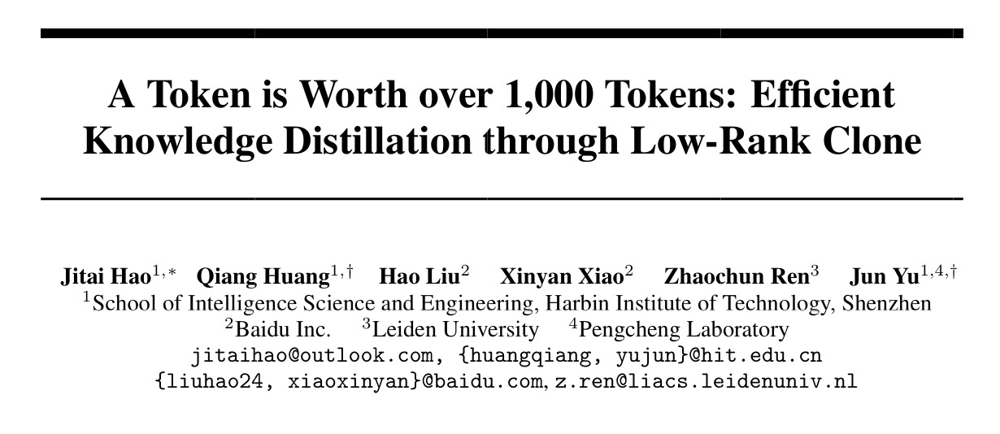

博士生尤晓兴（Oral）硕士生赵德龙（Poster）论文入选 AAAI 2026

📢 TL;DR： M3AIL实验室在多模态理解与可解释AI领域取得双重突破！ MERGE框架（Oral）通过构建实体中心多模态知识库，解决了新闻图说中“信息缺失”与“跨模态对齐”难题； PS-CBM模型（Poster）通过创新的“部分共享”策略，在显著提升模型可解释性的同时，保持了卓越的分类精度。
近日，人工智能领域顶级国际会议第40届AAAI（AAAI Conference on Artificial Intelligence, 2026）录用结果正式揭晓。 由哈尔滨工业大学（深圳）智能科学与工程学院多媒体智能前沿实验室（M3AIL Research Group）完成的两篇高质量论文成功入选。
其中，博士生尤晓兴作为第一作者的论文被录用为 Oral（口头报告，录用率极低）；硕士生赵德龙作为第一作者的论文被录用为 Poster（海报展示）。 两项研究均在俞俊教授、黄强教授的指导下完成，充分展现了实验室在多模态学习、大模型检索增强（RAG）以及可解释机器学习方向的深厚积淀。
【成果一：Oral】MERGE——知识补全视觉，助力精准新闻图说
论文题目：Knowledge Completes the Vision: A Multimodal Entity-aware Retrieval-Augmented Generation Framework for News Image Captioning
作者：尤晓兴、黄强、李凌宇、张驰、刘晓鹏、张民、俞俊
研究亮点： 针对新闻图说（News Image Captioning）中存在的关键实体信息缺失、跨模态对齐弱以及视觉地面化（Grounding）不精准等挑战，本文提出了首个实体感知检索增强生成框架 MERGE。
- 多模态知识库（EMKB）：构建了以实体为中心的多模态知识库，通过检索外部知识补全文章中未提及的背景信息（如识别人名、事件背后的历史等）。
- 三阶段CoT策略：通过“假设生成-句子选择-全局总结”的链式思考过程，实现了精准的视觉与文本细节对齐。
实验结果： 在GoodNews、NYTimes800k等权威数据集上，MERGE在CIDEr指标上分别提升了+6.84和+1.16，命名实体识别（NER）准确度大幅超越现有SOTA模型，展现了极强的专业新闻报道辅助能力。

【成果二：Poster】PS-CBM——兼顾精度与解释性的部分共享概念瓶颈模型
论文题目：Partially Shared Concept Bottleneck Models
作者：赵德龙、黄强、严迪、孙逸群、俞俊
研究亮点： 概念瓶颈模型（CBM）通过引入人类可理解的概念作为中间层，极大提升了黑盒模型的透明度。然而，现有方法面临概念冗余、视觉对齐差等难题。本文提出了PS-CBM框架：
- 部分共享策略（Partially Shared Strategy）：打破了以往模型在“各类别独立概念”与“全局共享概念”之间的极端选择，通过自动学习各类别间语义相似的概念子集，实现了模型简洁性与表达力的完美平衡。
- 新指标 CEA：提出了“概念有效精度（Concept-Efficient Accuracy）”指标，首次量化了准确率与概念成本之间的权衡。
实验结果： PS-CBM在11个多样化数据集上始终优于现有的可解释模型，在显著减少所需概念数量的同时，分类准确率提升了1.0%~7.4%，为构建“透明且强大”的AI决策系统提供了新方案。

多维创新：从科研前沿到实际应用
本次被录用的两项成果均体现了M3AIL实验室“以人为本”的AI研究理念。MERGE致力于提升机器在复杂新闻场景下的认知深度，而PS-CBM则致力于构建人类可信任、可理解的AI系统。 这些成果由哈工大（深圳）牵头，联合了人民日报社、鹏城实验室、新加坡国立大学等国内外顶尖机构合作完成，是产学研深度融合的又一结晶。
未来展望：探索多模态智能的新边界
AAAI作为人工智能领域的顶级盛会，其录用论文代表了行业最前沿的发展方向。 未来，实验室团队将继续深耕多模态大模型、高效检索增强、可解释AI等关键领域，推动研究成果在智慧媒体、医疗诊断、自动驾驶等高信任需求场景的落地，为推动AI技术的普惠化做出贡献。